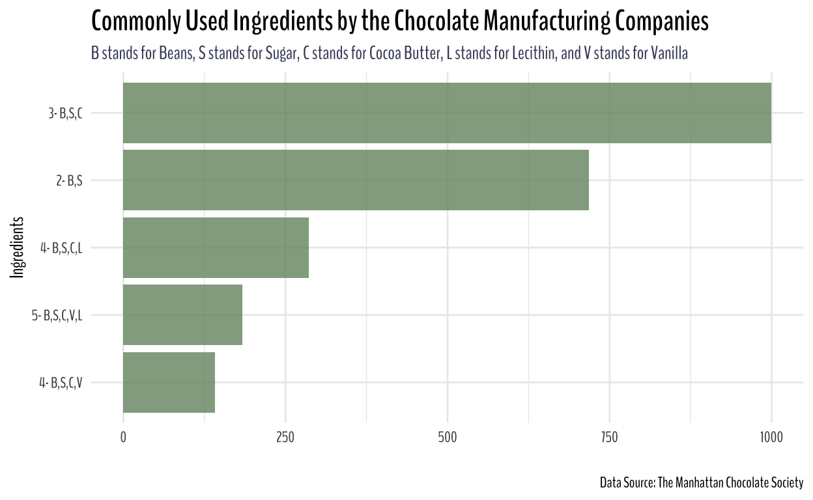
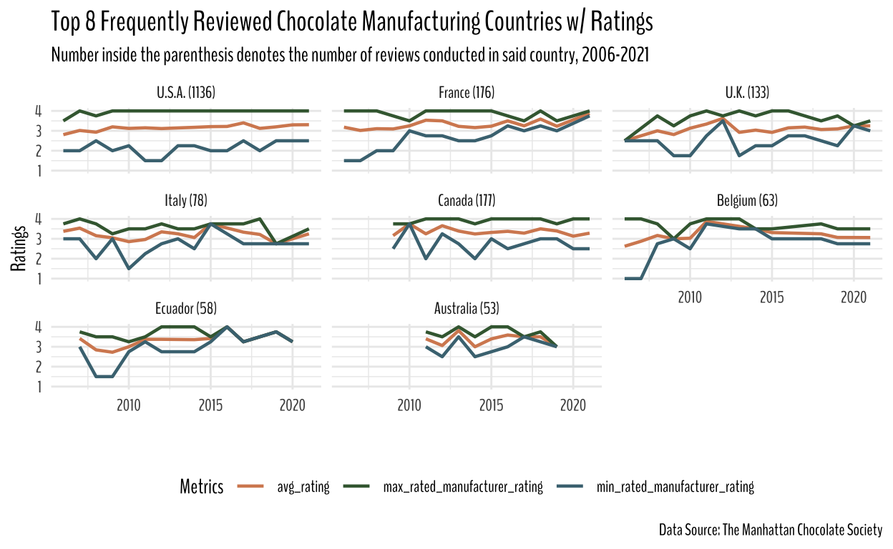
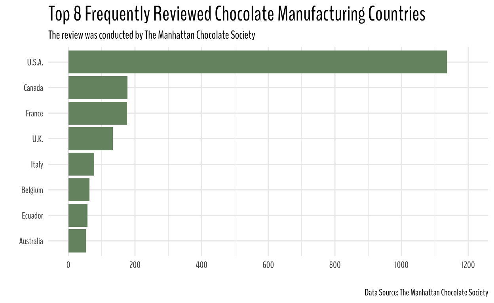
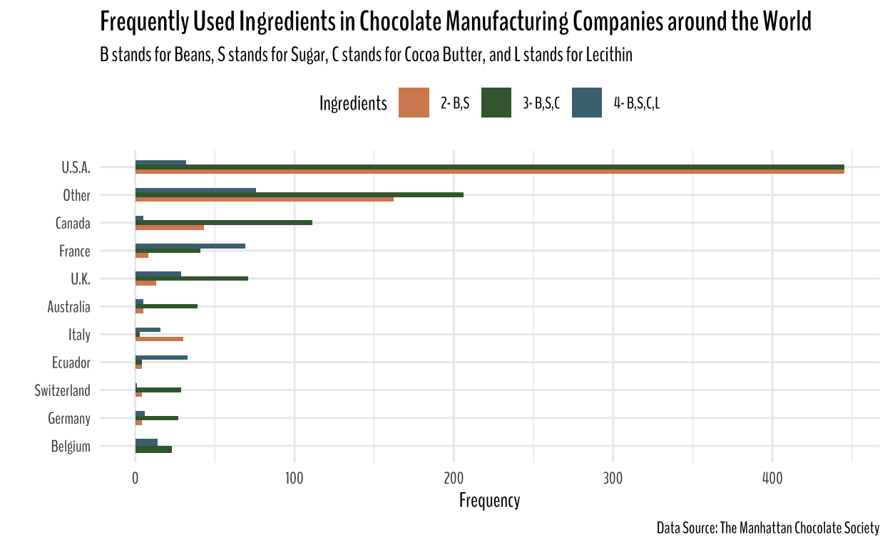
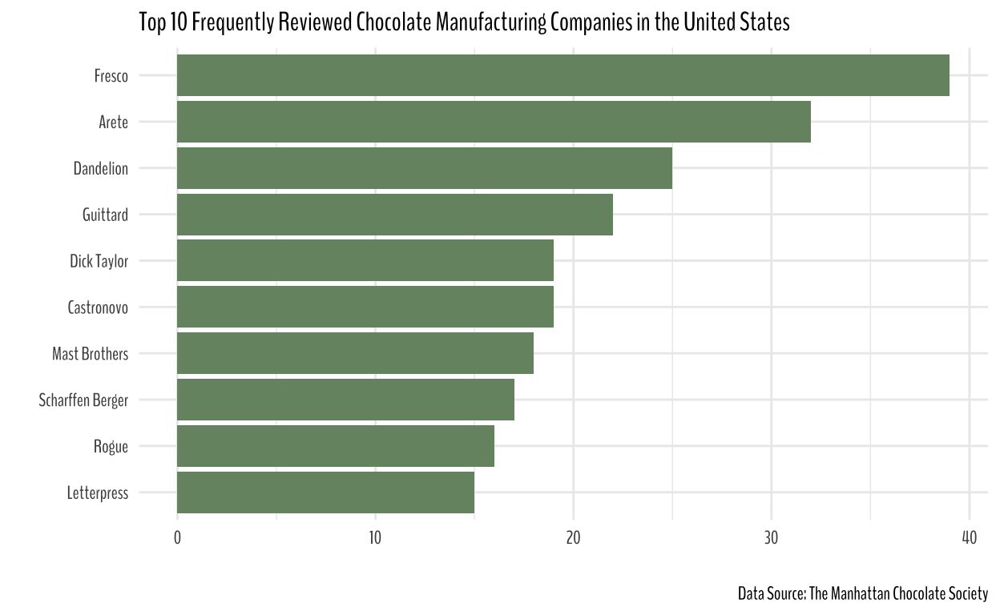
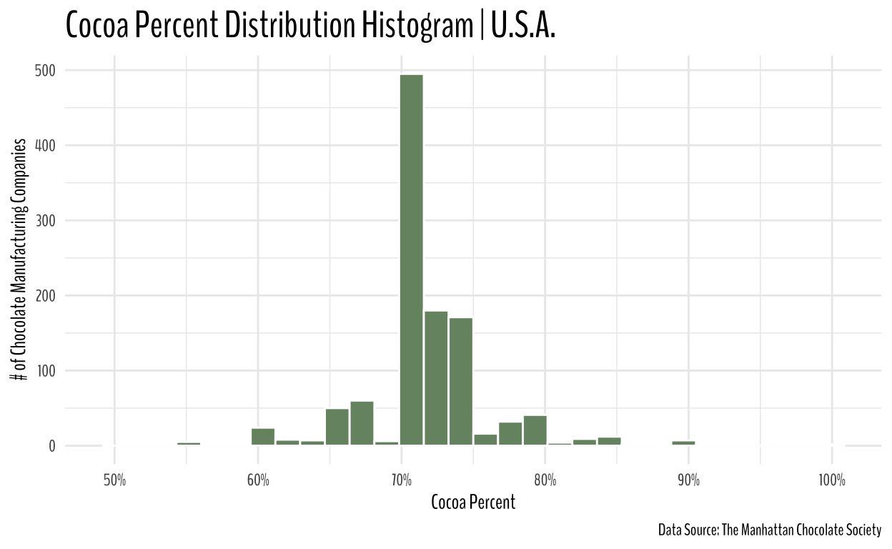
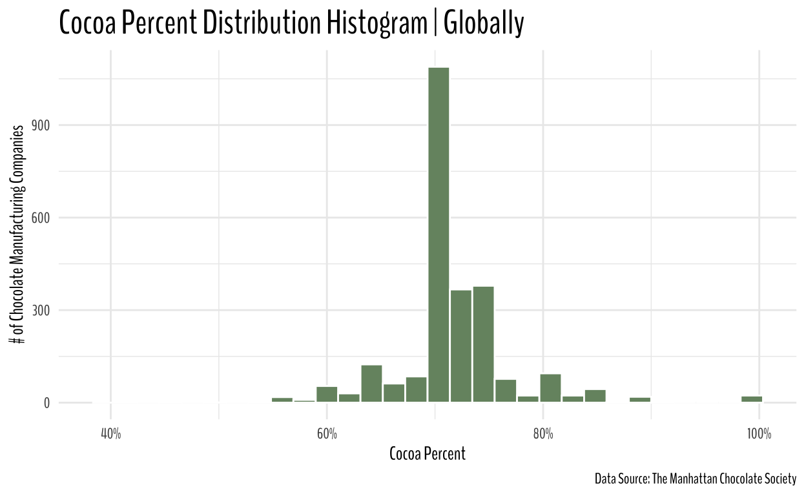
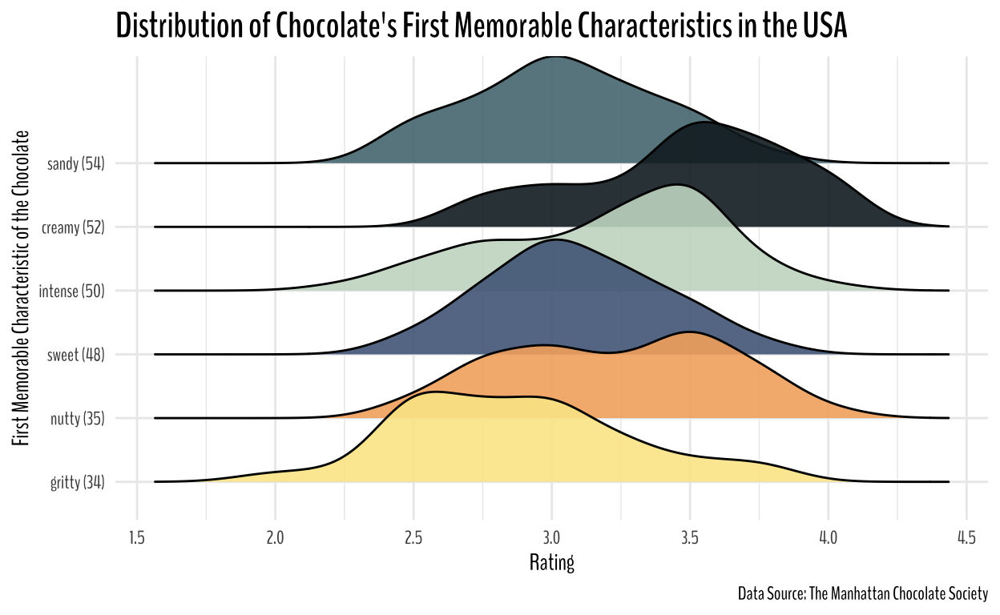
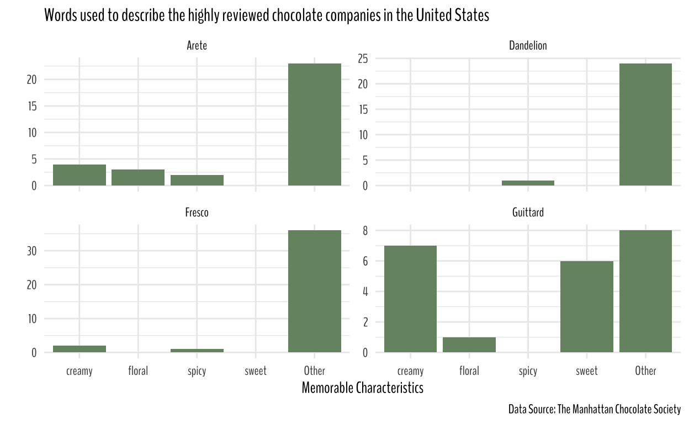

Visualizing and extracting information from chocolate ratings reviewed by The Manhattan Chocolate Society
library(tidyverse)
library(nationalparkcolors)
library(paletteer)
library(tidytuesdayR)
library(extrafontdb)
library(showtextdb)
library(extrafont)
library(showtext)
library(ggtext)
library(glue)
library(ggridges)
showtext_auto()
theme_set(theme_minimal())
font_add_google("BenchNine", family = "BenchNine")
chocolate <- readr::read_csv('https://raw.githubusercontent.com/rfordatascience/tidytuesday/master/data/2022/2022-01-18/chocolate.csv') %>%
mutate(first_memorable_characteristics = str_remove(most_memorable_characteristics, pattern = ",.*"))
# Commonly used ingredients in chocolate manufacturing companies across the world
chocolate %>%
filter(!is.na(ingredients)) %>%
add_count(ingredients) %>%
filter(n>= 100) %>%
count(ingredients, sort = TRUE) %>%
mutate(ingredients = ingredients %>% fct_reorder(n)) %>%
ggplot(aes(n, ingredients))+
geom_col(fill = "#769370", alpha = 0.8)+
labs(x = "", y = "Ingredients",
subtitle = "<span style = 'color:#454B68'>B stands for Beans, S stands for Sugar, C stands for Cocoa Butter, L stands for Lecithin, and V stands for Vanilla</span>",
title = "Commonly Used Ingredients by the Chocolate Manufacturing Companies",
caption = "Data Source: The Manhattan Chocolate Society")+
theme(text = element_text(family = "BenchNine"),
plot.title = element_text(size = 17, face = "bold"),
plot.subtitle = element_markdown())

top_8_most_reviewed_countries <- chocolate %>%
count(company_location, sort = T) %>%
filter(n >= 50) %>%
pull(company_location)
chocolate %>%
mutate(cocoa_percent = parse_number(cocoa_percent)) %>%
add_count(company_location) %>%
mutate(company_location_and_reviews = glue("{company_location} ({n})")) %>%
group_by(review_date, company_location_and_reviews, company_location) %>%
summarize(categories = n(),
avg_rating = mean(rating),
max_rated_manufacturer = first(company_manufacturer[which.max(rating)]),
min_rated_manufacturer = first(company_manufacturer[which.min(rating)]),
max_rated_manufacturer_rating = first(rating[which.max(rating)]),
min_rated_manufacturer_rating = first(rating[which.min(rating)])) %>%
ungroup() %>%
add_count(company_location) %>%
mutate(company_location_and_reviews = company_location_and_reviews %>% fct_reorder(-n)) %>%
filter(company_location %in% top_8_most_reviewed_countries) %>%
pivot_longer(cols = c(avg_rating, max_rated_manufacturer_rating, min_rated_manufacturer_rating), names_to = "metrics") %>%
ggplot(aes(review_date, value, color = metrics))+
geom_line(size = 0.8)+
facet_wrap(~company_location_and_reviews)+
theme(text = element_text(family = "BenchNine"),
plot.title = element_text(size = 15))+
labs(x = "",
y = "Ratings",
title = "Top 8 Frequently Reviewed Chocolate Manufacturing Countries w/ Ratings",
subtitle = "Number inside the parenthesis denotes the number of reviews conducted in said country, 2006-2021",
color = "Metrics",
caption = "Data Source: The Manhattan Chocolate Society")+
scale_color_paletteer_d("nationalparkcolors::SmokyMountains")+
theme(legend.position = "bottom")

chocolate %>%
add_count(company_location) %>%
arrange(desc(n)) %>%
filter(n >= 50) %>%
count(company_location, sort = T) %>%
mutate(company_location = company_location %>% fct_reorder(n)) %>%
ggplot(aes(n, company_location))+
geom_col(fill = "#769370")+
labs(x = "",
y = "")+
scale_x_continuous(limits = c(0, 1200), breaks = seq(0, 1200, by = 200))+
labs(title = "Top 8 Frequently Reviewed Chocolate Manufacturing Countries",
subtitle = "The review was conducted by The Manhattan Chocolate Society",
caption = "Data Source: The Manhattan Chocolate Society")+
theme(text = element_text(family = "BenchNine"),
legend.position = "none",
plot.title = element_text(size = 20))

chocolate %>%
mutate(company_location = company_location %>% fct_lump(10)) %>%
filter(!is.na(ingredients)) %>%
add_count(ingredients) %>%
filter(n > 200) %>% # keeping ingredients that occur more than 100 times in the dataset
select(-n) %>%
group_by(company_location) %>%
add_count(ingredients) %>%
ungroup() %>%
mutate(
company_location = company_location %>% fct_relevel(
c(
"U.S.A.",
"Other",
"Canada",
"France",
"U.K.",
"Italy",
"Belgium",
"Ecuador",
"Australia",
"Switzerland",
"Germany"
)
),
company_location = company_location %>% fct_reorder(n, .fun = sum)
) %>%
ggplot(aes(n, company_location, fill = ingredients)) +
geom_col(position = "dodge", width = 0.5) +
theme(
text = element_text(family = "BenchNine"),
legend.position = "top",
plot.title = element_text(size = 15, face = "bold")
) +
scale_fill_paletteer_d("nationalparkcolors::SmokyMountains") +
labs(y = "",
x = "Frequency",
fill = "Ingredients",
title = "Frequently Used Ingredients in Chocolate Manufacturing Companies around the World",
subtitle = "B stands for Beans, S stands for Sugar, C stands for Cocoa Butter, and L stands for Lecithin",
caption = "Data Source: The Manhattan Chocolate Society")

chocolate %>%
filter(company_location == "U.S.A.") %>%
add_count(company_manufacturer) %>%
filter(n >= 15) %>%
count(company_manufacturer, sort = T) %>%
mutate(company_manufacturer = company_manufacturer %>% fct_reorder(n)) %>%
slice(1:10) %>%
ggplot(aes(n, company_manufacturer))+
geom_col(fill = "#769370")+
labs(x = "",
y = "",
title = "Top 10 Frequently Reviewed Chocolate Manufacturing Companies in the United States",
caption = "Data Source: The Manhattan Chocolate Society")+
theme(text = element_text(family = "BenchNine"),
plot.title = element_text(size = 12.5))

chocolate %>%
filter(company_location == "U.S.A.") %>%
mutate(cocoa_percent = parse_number(cocoa_percent)) %>%
ggplot(aes(cocoa_percent))+
geom_histogram(color = "white", fill = "#769370")+
expand_limits(x = 50)+
labs(y = "# of Chocolate Manufacturing Companies",
x = "Cocoa Percent",
title = "Cocoa Percent Distribution Histogram | U.S.A.",
caption = "Data Source: The Manhattan Chocolate Society")+
theme(text = element_text(family = "BenchNine"),
plot.title = element_text(size = 20))+
scale_x_continuous(labels = scales::percent_format(scale = 1/1))

From the above plot, it does look like most of the companies reviewed by The Manhattan Chocolate Society had cocoa in their products between 70% to 75%.
chocolate %>%
mutate(cocoa_percent = parse_number(cocoa_percent)) %>%
ggplot(aes(cocoa_percent))+
geom_histogram(color = "white", fill = "#769370")+
expand_limits(x = 40)+
labs(y = "# of Chocolate Manufacturing Companies",
x = "Cocoa Percent",
title = "Cocoa Percent Distribution Histogram | Globally",
caption = "Data Source: The Manhattan Chocolate Society")+
theme(text = element_text(family = "BenchNine"),
plot.title = element_text(size = 20))+
scale_x_continuous(labels = scales::percent_format(scale = 1/1))

chocolate %>%
filter(company_location == "U.S.A.") %>%
add_count(first_memorable_characteristics) %>%
filter(n > 28) %>%
mutate(first_memorable_characteristics = glue("{first_memorable_characteristics} ({n})"),
first_memorable_characteristics = first_memorable_characteristics %>% fct_reorder(n)) %>%
ggplot(
aes(rating, first_memorable_characteristics, fill = first_memorable_characteristics)
) +
geom_density_ridges(alpha = 0.9) +
theme(legend.position = "none") +
scale_fill_paletteer_d("nationalparkcolors::GeneralGrant")+
theme(text = element_text(family = "BenchNine"),
plot.title = element_text(size = 17, face = "bold"))+
labs(y = "First Memorable Characteristic of the Chocolate",
x = "Rating",
title = "Distribution of Chocolate's First Memorable Characteristics in the USA",
caption = "Data Source: The Manhattan Chocolate Society")

chocolate %>%
filter(company_location == "U.S.A.",
company_manufacturer %in% (freq_reviewed_4_us_companies %>% pull(company_manufacturer))) %>%
mutate(first_memorable_characteristics = first_memorable_characteristics %>% fct_lump(4)) %>%
count(company_manufacturer, first_memorable_characteristics, sort = T) %>%
ggplot(aes(first_memorable_characteristics, n))+
geom_col(fill = "#769370")+
facet_wrap(~company_manufacturer, scales = "free_y")+
theme(text = element_text(family = "BenchNine"),
plot.title = element_text(size = 12.5))+
labs(x = "Memorable Characteristics", y = "",
title = "Words used to describe the highly reviewed chocolate companies in the United States",
caption = "Data Source: The Manhattan Chocolate Society")

The plot isn’t super informative, but Guittard products were described as “creamy” and “sweet” more often than not.